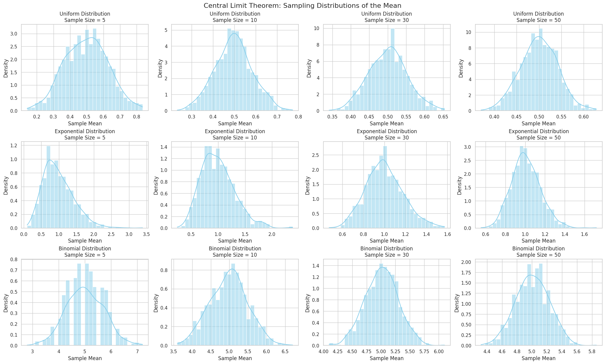

Problem 1
Central Limit Theorem Simulation – Theoretical Foundations
Introduction
The Central Limit Theorem (CLT) is a cornerstone of probability theory and statistics. It establishes that, regardless of the population distribution's shape, the distribution of the sample mean approximates a normal distribution as the sample size increases, provided that certain conditions are met.
Central Limit Theorem – Formal Statement
Let \(X_1, X_2, \dots, X_n\) be a sequence of independent and identically distributed (i.i.d.) random variables with finite mean \(\mu\) and finite variance \(\sigma^2\). The sample mean \(\bar{X}_n\) is given by:
Then, as \(n \to \infty\), the standardized version of \(\bar{X}_n\) converges in distribution to a standard normal variable \(Z\):
This convergence allows practitioners to approximate probabilities concerning the sample mean using the standard normal distribution.
Conditions for the CLT
The convergence described by the CLT holds under the following assumptions:
- The samples must be independent.
- Each sample must be drawn from the same distribution (i.i.d.).
- The population distribution must have a finite variance \(\sigma^2 < \infty\).
Implications and Applications
The CLT has wide-ranging implications in both theoretical and applied statistics:
- Estimation: Enables construction of confidence intervals for population means.
- Hypothesis Testing: Justifies the use of z-tests and t-tests under large sample sizes.
- Quality Control: Supports assumptions in control charts where process means are monitored.
- Financial Modeling: Underpins stochastic models that assume normality for asset returns over time.
Role of Sample Size and Population Shape
As the sample size \(n\) increases:
- The distribution of sample means becomes increasingly symmetric and bell-shaped.
- The standard error of the sample mean \(\sigma / \sqrt{n}\) decreases, leading to more concentrated distributions.
- Even for skewed or discrete distributions, the sampling distribution of the mean tends toward normality.
Importantly, the rate of convergence to normality is faster when:
- The original population is already symmetric (e.g., uniform).
- The sample size is larger (commonly, \(n \geq 30\) is sufficient).
Population Variance and Spread of Sampling Distribution
The spread of the sampling distribution of the mean is determined by the population standard deviation \(\sigma\) and the sample size \(n\):
Thus, greater population variability requires larger sample sizes to achieve the same level of precision in the sample mean.
Simulation Rationale
Through simulation, we empirically verify:
- How distributions of sample means converge to normality.
- The influence of sample size and population type (Uniform, Exponential, Binomial).
- How increasing sample size reduces sampling variability.
These empirical findings provide tangible support for the theoretical guarantees of the CLT.
Code and Plots
Central Limit Theorem: Sampling Distributions of the Mean

# CLT Simulation in Colab
import numpy as np
import matplotlib.pyplot as plt
import seaborn as sns
# Set plot style
sns.set(style="whitegrid")
np.random.seed(42)
# Parameters
distributions = {
'Uniform': lambda size: np.random.uniform(0, 1, size),
'Exponential': lambda size: np.random.exponential(scale=1.0, size=size),
'Binomial': lambda size: np.random.binomial(n=10, p=0.5, size=size),
}
sample_sizes = [5, 10, 30, 50]
num_samples = 1000 # Number of times to sample to form sampling distribution
# Plotting
fig, axes = plt.subplots(
len(distributions), len(sample_sizes),
figsize=(20, 12),
constrained_layout=True
)
for i, (dist_name, dist_func) in enumerate(distributions.items()):
for j, n in enumerate(sample_sizes):
sample_means = [
np.mean(dist_func(n)) for _ in range(num_samples)
]
ax = axes[i, j]
sns.histplot(sample_means, kde=True, stat="density", bins=30, ax=ax, color='skyblue')
ax.set_title(f'{dist_name} Distribution\nSample Size = {n}', fontsize=12)
ax.set_xlabel('Sample Mean')
ax.set_ylabel('Density')
plt.suptitle("Central Limit Theorem: Sampling Distributions of the Mean", fontsize=16)
plt.show()